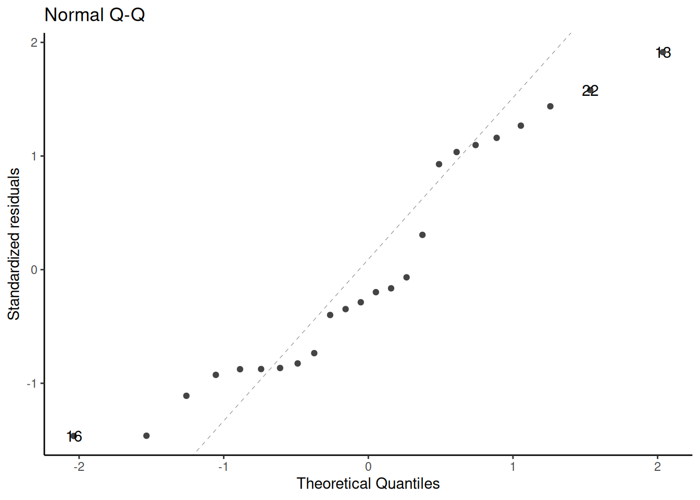

This course is about generalized linear models (for non-Gaussian outcomes)
UC Davis STA 108 (“Applied Statistical Methods: Regression Analysis”) is a prerequisite for this course, so everyone here should have some understanding of linear regression already.
We will review linear regression to:
make sure everyone is caught up
to provide an epidemiological perspective on model interpretation.
2.1.2 Chapter overview
Section 2.2: how to interpret linear regression models
Section 2.3: how to estimate linear regression models
Section 2.4: how to quantify uncertainty about our estimates
Section 2.8: how to tell if your model is insufficiently complex
2.2 Understanding Gaussian Linear Regression Models
2.2.1 Motivating example: birthweights and gestational age
Suppose we want to learn about the distributions of birthweights (outcome\(Y\)) for (human) babies born at different gestational ages (covariate\(A\)) and with different chromosomal sexes (covariate\(S\)) (Dobson and Barnett (2018) Example 2.2.2).
plot1=bw|>ggplot(aes( x =age, y =weight, linetype =sex, shape =sex, col =sex))+theme_bw()+xlab("Gestational age (weeks)")+ylab("Birthweight (grams)")+theme(legend.position ="bottom")+# expand_limits(y = 0, x = 0) +geom_point(alpha =.7)print(plot1+facet_wrap(~sex))
Figure 2.1: birthweight data (Dobson and Barnett (2018) Example 2.2.2)
Data notation
Let’s define some notation to represent this data.
\(Y\): birthweight (measured in grams)
\(S\): chromosomal sex: “male” (XY) or “female” (XX)
\(A\): estimated gestational age at birth (measured in weeks).
Note
Female is the reference level for the categorical variable \(S\) (chromosomal sex) and corresponding indicator variable \(M\) . The choice of a reference level is arbitrary and does not limit what we can do with the resulting model; it only makes it more computationally convenient to make inferences about comparisons involving that reference group.
2.2.2 Parallel lines regression
We don’t have enough data to model the distribution of birth weight separately for each combination of gestational age and sex, so let’s instead consider a (relatively) simple model for how that distribution varies with gestational age and sex:
Note that age doesn’t show up in this difference: in other words, according to this model, the difference between females and males with the same gestational age is the same for every age.
That’s an assumption of the model; it’s built-in to the parametric structure, even before we plug in the estimated values of those parameters.
That’s why the lines are parallel.
2.2.3 Interactions
What if we don’t like that parallel lines assumption?
Then we need to allow an “interaction” between age \(A\) and sex \(S\):
\[
E[Y|A=a, S=s] = \beta_0 + \beta_A a+ \beta_M m + \beta_{AM} (a \cdot m)
\tag{2.2}\]
Now, the slope of mean birthweight \(E[Y|A,S]\) with respect to gestational age \(A\) depends on the value of sex \(S\).
Show R code
bw_lm2=lm(weight~sex+age+sex:age, data =bw)bw_lm2|>parameters()|>print_md( include_reference =TRUE,# show_sigma = TRUE, select ="{estimate}")
Table 2.5: Birthweight model with interaction term
Figure 2.3: Birthweight model with interaction term
Now we can see that the lines aren’t parallel.
Here’s another way we could rewrite this model (by collecting terms involving \(S\)):
\[
E[Y|A, M] = \beta_0 + \beta_M M+ (\beta_A + \beta_{AM} M) A
\]
Note
If you want to understand a coefficient in a model with interactions, collect terms for the corresponding variable, and you will see what other variables are interacting with the variable you are interested in.
In this case, the coefficient \(S\) is interacting with \(A\). So the slope of \(Y\) with respect to \(A\) depends on the value of \(M\).
According to this model, there is no such thing as “the slope of birthweight with respect to age”. There are two slopes, one for each sex.3 We can only talk about “the slope of birthweight with respect to age among males” and “the slope of birthweight with respect to age among females”.
Then: that coefficient is the difference in means per unit change in its corresponding coefficient, when the other collected variables are set to 0.
To learn what this model is assuming, let’s plug in a few values.
Exercise 2.4 According to this model, what’s the mean birthweight for a female born at 36 weeks?
Note that age now does show up in the difference: in other words, according to this model, the difference in mean birthweights between females and males with the same gestational age can vary by gestational age.
That’s how the lines in the graph ended up non-parallel.
2.2.4 Stratified regression
We could re-write the interaction model as a stratified model, with a slope and intercept for each sex:
\[
\mathbb{E}\left[Y|A=a, S=s\right] =
\beta_M m + \beta_{AM} (a \cdot m) +
\beta_F f + \beta_{AF} (a \cdot f)
\tag{2.3}\]
Compare this stratified model with our interaction model, Equation 2.2:
\[
\mathbb{E}\left[Y|A=a, S=s\right] =
\beta_0 + \beta_A a + \beta_M m + \beta_{AM} (a \cdot m)
\]
In the stratified model, the intercept term \(\beta_0\) has been relabeled as \(\beta_F\).
Show R code
bw_lm2=lm(weight~sex+age+sex:age, data =bw)bw_lm2|>parameters()|>print_md( include_reference =TRUE,# show_sigma = TRUE, select ="{estimate}")
Table 2.6: Birthweight model with interaction term
Parameter
Estimate
(Intercept)
-2141.67
sex (female)
0.00
sex (male)
872.99
age
130.40
sex (male) × age
-18.42
Show R code
bw_lm_strat=bw|>lm( formula =weight~sex+sex:age-1, data =_)bw_lm_strat|>parameters()|>print_md(# show_sigma = TRUE, select ="{estimate}")
Table 2.7: Birthweight model - stratified betas
Parameter
Estimate
sex (female)
-2141.67
sex (male)
-1268.67
sex (female) × age
130.40
sex (male) × age
111.98
2.2.5 Curved-line regression
If we transform some of our covariates (\(X\)s) and plot the resulting model on the original covariate scale, we end up with curved regression lines:
Show R code
bw_lm3=lm(weight~sex:log(age)-1, data =bw)library(palmerpenguins)ggpenguins<-palmerpenguins::penguins|>dplyr::filter(species=="Adelie")|>ggplot(aes(x =bill_length_mm , y =body_mass_g))+geom_point()+xlab("Bill length (mm)")+ylab("Body mass (g)")ggpenguins2=ggpenguins+stat_smooth( method ="lm", formula =y~log(x), geom ="smooth")+xlab("Bill length (mm)")+ylab("Body mass (g)")ggpenguins2|>print()
Figure 2.4: palmerpenguins model with bill_length entering on log scale
2.3 Estimating Linear Models via Maximum Likelihood
2.3.1 Likelihood, log-likelihood, and score functions for linear regression
In EPI 203 and Appendix F, we learned how to fit outcome-only models of the form \(p(X=x|\theta)\) to iid data \(\tilde{x}= (x_1,…,x_n)\) using maximum likelihood estimation.
Now, we apply the same procedure to linear regression models:
The second derivative matrix \(\ell_{\beta, \beta'} ''(\beta, \sigma^2;\mathbf X,\tilde{y})\) is negative definite at \(\beta = (X'X)^{-1}X'y\), so \(\hat \beta_{ML} = (X'X)^{-1}X'y\) is the MLE for \(\beta\).
Table 2.8: Estimated model for birthweight data with interaction term
Parameter
Coefficient
SE
95% CI
t(20)
p
(Intercept)
-2141.67
1163.60
(-4568.90, 285.56)
-1.84
0.081
sex (male)
872.99
1611.33
(-2488.18, 4234.17)
0.54
0.594
age
130.40
30.00
(67.82, 192.98)
4.35
< .001
sex (male) × age
-18.42
41.76
(-105.52, 68.68)
-0.44
0.664
So we can do confidence intervals, hypothesis tests, and p-values exactly as in the one-variable case we looked at previously.
2.3.3 Residual Standard Deviation
\(\hat \sigma\) represents an estimate of the Residual Standard Deviation parameter, \(\sigma\). We can extract \(\hat \sigma\) from the fitted model, using the sigma() function:
Extract the estimated standard deviation of the errors, the
“residual standard deviation” (misnamed also
“residual standard error”, e.g., in
summary.lm()'s output, from a fitted model).
Many classical statistical models have a scale parameter,
typically the standard deviation of a zero-mean normal (or Gaussian)
random variable which is denoted as \sigma.
sigma(.) extracts the estimated parameter from a fitted
model, i.e., \hat\sigma.
Note
The misnomer “Residual standard error” has been part of
too many R (and S) outputs to be easily changed there.
2.4 Inference about Gaussian Linear Regression Models
2.4.1 Motivating example: birthweight data
Research question: is there really an interaction between sex and age?
\(H_0: \beta_{AM} = 0\)
\(H_A: \beta_{AM} \neq 0\)
\(P(|\hat\beta_{AM}| > |-18.4172| \mid H_0)\) = ?
2.4.2 Wald tests and CIs
R can give you Wald tests for single coefficients and corresponding CIs:
When we use likelihood ratio tests, we are comparing how well different models fit the data.
Likelihood ratio tests require “nested” models: one must be a special case of the other.
If we have non-nested models, we can instead use the Akaike Information Criterion (AIC) or Bayesian Information Criterion (BIC):
AIC = \(-2 * \ell(\hat\theta) + 2 * p\)
BIC = \(-2 * \ell(\hat\theta) + p * \text{log}(n)\)
where \(\ell\) is the log-likelihood of the data evaluated using the parameter estimates \(\hat\theta\), \(p\) is the number of estimated parameters in the model (including \(\hat\sigma^2\)), and \(n\) is the number of observations.
You can calculate these criteria using the logLik() function, or use the built-in R functions:
AIC in R
Show R code
-2*logLik(bw_lm2)|>as.numeric()+2*(length(coef(bw_lm2))+1)# sigma counts as a parameter here#> [1] 323.2AIC(bw_lm2)#> [1] 323.2
For example, in the birthweight data, there are \(q = 12\) unique patterns (Table 2.9).
Show R code
bw.X.unique
Table 2.9: Unique covariate combinations in the birthweight data, with replicate counts
sex
age
n
female
36
2
female
37
1
female
38
2
female
39
2
female
40
4
female
42
1
male
35
1
male
36
1
male
37
2
male
38
3
male
40
4
male
41
1
Definition 2.1 (Replicates) If a given covariate pattern has more than one observation in a dataset, those observations are called replicates.
Example 2.1 (Replicates in the birthweight data) In the birthweight dataset, there are 2 replicates of the combination “female, age 36” (Table 2.9).
Exercise 2.7 (Replicates in the birthweight data) Which covariate pattern(s) in the birthweight data has the most replicates?
Solution 2.1 (Replicates in the birthweight data). Two covariate patterns are tied for most replicates: males at age 40 weeks and females at age 40 weeks. 40 weeks is the usual length for human pregnancy (Polin, Fox, and Abman (2011)), so this result makes sense.
The likelihood ratio statistic for this test is \[\lambda = 2 * (\ell_{\text{full}} - \ell) = 10.3554\] where:
\(\ell_{\text{max}}\) is the log-likelihood of the full model: -151.4016
\(\ell\) is the log-likelihood of our comparison model (two slopes, two intercepts): -156.5793
This statistic is called the deviance or residual deviance for our two-slopes and two-intercepts model; it tells us how much the likelihood of that model deviates from the likelihood of the maximal model.
The corresponding p-value tells us whether there we have enough evidence to detect that our two-slopes, two-intercepts model is a worse fit for the data than the maximal model; in other words, it tells us if there’s evidence that we missed any important patterns. (Remember, a nonsignificant p-value could mean that we didn’t miss anything and a more complicated model is unnecessary, or it could mean we just don’t have enough data to tell the difference between these models.)
2.5.3 Null Deviance
Similarly, the least complicated model we could fit would have only one mean parameter, an intercept:
\[\text E[Y|X=x] = \beta_0\] We can fit this model in R like so:
The likelihood ratio statistic for the test comparing the null model to the maximal model is \[\lambda = 2 * (\ell_{\text{full}} - \ell_{0}) = 35.1067\] where:
\(\ell_{\text{0}}\) is the log-likelihood of the null model: -168.955
\(\ell_{\text{full}}\) is the log-likelihood of the maximal model: -151.4016
This log-likelihood ratio statistic is called the null deviance. It tells us whether we have enough data to detect a difference between the null and full models.
Definition 2.2 (Predicted value) In a regression model \(\text{p}(y|x)\), the predicted value of \(y\) given \(x\) is the estimated mean of \(Y\) given \(X\):
\[\hat y \stackrel{\text{def}}{=}\hat{\text{E}}\left[Y|X=x\right]\]
For linear models, the predicted value can be straightforwardly calculated by multiplying each predictor value \(x_j\) by its corresponding coefficient \(\beta_j\) and adding up the results:
These special predictions are called the fitted values of the dataset:
Definition 2.3 For a given dataset \((\tilde{Y}, \mathbf{X})\) and corresponding fitted model \(\text{p}_{\hat \beta}(\tilde{y}|\mathbf{x})\), the fitted value of \(y_i\) is the predicted value of \(y\) when \(\tilde{X}=\tilde{x}_i\) using the estimate parameters \(\hat \beta\).
The warning from the last command is: “predictions on current data refer to future responses” (since you already know what happened to the current data, and thus don’t need to predict it).
Figure 2.6: Birthweight model with interaction term
It’s not easy to assess these assumptions from this model. If there are multiple continuous covariates, it becomes even harder to visualize the raw data.
2.8.3 Residuals
Maybe we can transform the data and model in some way to make it easier to inspect.
Definition 2.4 (Residual noise) The residual noise in a probabilistic model \(p(Y)\) is the difference between an observed value \(y\) and its distributional mean:
We use the same notation for residual noise that we used for errors. \(\mathbb{E}\left[Y\right]\) can be viewed as an estimate of \(Y\), before \(y\) is observed. Conversely, each observation \(y\) can be viewed as an estimate of \(\mathbb{E}\left[Y\right]\) (albeit an imprecise one, individually, since \(n=1\)).
We can rearrange Equation 2.8 to view \(y\) as the sum of its mean plus the residual noise:
\[y = \mathbb{E}\left[Y\right] + \varepsilon{y}\]
Theorem 2.1 (Residuals in Gaussian models) If \(Y\) has a Gaussian distribution, then \(\varepsilon(Y)\) also has a Gaussian distribution, and vice versa.
Proof. Left to the reader.
Definition 2.5 (Residual errors of a fitted model value) The residual of a fitted value \(\hat y\) (shorthand: “residual”) is its error: \[
\begin{aligned}
e(\hat y) &\stackrel{\text{def}}{=}\varepsilon\left(\hat y\right)
\\&= y - \hat y
\end{aligned}
\]
\(e(\hat y)\) can be seen as the maximum likelihood estimate of the residual noise:
\[
\begin{aligned}
e(\hat y) &= y - \hat y
\\ &= \hat\varepsilon_{ML}
\end{aligned}
\]
General characteristics of residuals
Theorem 2.2 For unbiased estimators \(\hat\theta\):
With enough data and a correct model, the residuals will be approximately Guassian distributed, with variance \(\sigma^2\), which we can estimate using \(\hat\sigma^2\): that is:
\[
e_i \ \sim_{\text{iid}}\ N(0, \hat\sigma^2)
\]
Example 2.2 (residuals in birthweight data) R provides a function for residuals:
bw=bw|>mutate(resids_intxn =weight-fitted(bw_lm2))plot_bw_resid=bw|>ggplot(aes( x =age, y =resids_intxn, linetype =sex, shape =sex, col =sex))+theme_bw()+xlab("Gestational age (weeks)")+ylab("residuals (grams)")+theme(legend.position ="bottom")+# expand_limits(y = 0, x = 0) +geom_point(alpha =.7)print(plot_bw_resid+facet_wrap(~sex))
Figure 2.7: Residuals of interaction model for birthweight data
Hence, with enough data and a correct model, the standardized residuals will be approximately standard Gaussian; that is,
\[
r_i \ \sim_{\text{iid}}\ N(0,1)
\]
2.8.4 Marginal distributions of residuals
To look for problems with our model, we can check whether the residuals \(e_i\) and standardized residuals \(r_i\) look like they have the distributions that they are supposed to have, according to the model.
These are not quite the same, because R is doing something more complicated and precise to get the standard errors. Let’s not worry about those details for now; the difference is pretty small in this case:
Figure 2.9: Marginal distribution of standardized residuals
This looks similar, although the scale of the x-axis got narrower, because we divided by \(\hat\sigma\) (roughly speaking).
Still hard to tell if the distribution is Gaussian.
2.8.5 QQ plot of standardized residuals
Another way to assess normality is the QQ plot of the standardized residuals versus normal quantiles:
Show R code
library(ggfortify)# needed to make ggplot2::autoplot() work for `lm` objectsqqplot_lm2_auto=bw_lm2|>autoplot( which =2, # options are 1:6; can do multiple at once ncol =1)+theme_classic()print(qqplot_lm2_auto)

If the Gaussian model were correct, these points should follow the dotted line.
Fig 2.4 panel (c) in Dobson and Barnett (2018) is a little different; they didn’t specify how they produced it, but other statistical analysis systems do things differently from R.
Figure 2.10: birthweight model (Equation 2.2): residuals versus fitted values
If the model is correct, the blue line should stay flat and close to 0, and the cloud of dots should have the same vertical spread regardless of the fitted value.
If not, we probably need to change the functional form of linear component of the mean, \[\text{E}[Y|X=x] = \beta_0 + \beta_1 X_1 + ... + \beta_p X_p\]
Figure 2.18: Scale-location plot of birthweight data
Here, the blue line doesn’t need to be near 0, but it should be flat. If not, the residual variance \(\sigma^2\) might not be constant, and we might need to transform our outcome \(Y\) (or use a model that allows non-constant variance).
Residuals versus leverage
We can also plot our standardized residuals against “leverage”, which roughly speaking is a measure of how unusual each \(x_i\) value is. Very unusual \(x_i\) values can have extreme effects on the model fit, so we might want to remove those observations as outliers, particularly if they have large residuals.
(adapted from Dobson and Barnett (2018) §6.3.3; for more information on prediction, see James et al. (2013) and Harrell (2015)).
If we have a lot of covariates in our dataset, we might want to choose a small subset to use in our model.
There are a few possible metrics to consider for choosing a “best” model.
2.9.1 Mean squared error
We might want to minimize the mean squared error, \(\text E[(y-\hat y)^2]\), for new observations that weren’t in our data set when we fit the model.
Unfortunately, \[\frac{1}{n}\sum_{i=1}^n (y_i-\hat y_i)^2\] gives a biased estimate of \(\text E[(y-\hat y)^2]\) for new data. If we want an unbiased estimate, we will have to be clever.
Cross-validation
Show R code
data("carbohydrate", package ="dobson")library(cvTools)full_model<-lm(carbohydrate~., data =carbohydrate)cv_full=full_model|>cvFit( data =carbohydrate, K =5, R =10, y =carbohydrate$carbohydrate)reduced_model=update(full_model, formula =~.-age)cv_reduced=reduced_model|>cvFit( data =carbohydrate, K =5, R =10, y =carbohydrate$carbohydrate)
Show R code
results_reduced=tibble( model ="wgt+protein", errs =cv_reduced$reps[])results_full=tibble(model ="wgt+age+protein", errs =cv_full$reps[])cv_results=bind_rows(results_reduced, results_full)cv_results|>ggplot(aes(y =model, x =errs))+geom_boxplot()
coef(cvfit, s ="lambda.1se")#> 4 x 1 sparse Matrix of class "dgCMatrix"#> s1#> (Intercept) 34.2044#> age . #> weight -0.0926#> protein 0.8582
2.10 Categorical covariates with more than two levels
2.10.1 Example: birthweight
In the birthweight example, the variable sex had only two observed values:
Show R code
unique(bw$sex)#> [1] female male #> Levels: female male
If there are more than two observed values, we can’t just use a single variable with 0s and 1s.
2.10.2
For example, Table 2.13 shows the (in)famousiris data (Anderson (1935)), and Table 2.14 provides summary statistics. The data include three species: “setosa”, “versicolor”, and “virginica”.
If we want to model Sepal.Length by species, we could create a variable \(X\) that represents “setosa” as \(X=1\), “virginica” as \(X=2\), and “versicolor” as \(X=3\).
Show R code
data(iris)# this step is not always necessary, but ensures you're starting # from the original version of a dataset stored in a loaded packageiris=iris|>tibble()|>mutate( X =case_when(Species=="setosa"~1,Species=="virginica"~2,Species=="versicolor"~3))iris|>distinct(Species, X)
Table 2.15: iris data with numeric coding of species
Harrell, Frank E. 2015. Regression Modeling Strategies: With Applications to Linear Models, Logistic Regression, and Survival Analysis. 2nd ed. Springer. https://doi.org/10.1007/978-3-319-19425-7.
James, Gareth, Daniela Witten, Trevor Hastie, Robert Tibshirani, et al. 2013. An Introduction to Statistical Learning. Vol. 112. Springer. https://www.statlearning.com/.
Vittinghoff, Eric, David V Glidden, Stephen C Shiboski, and Charles E McCulloch. 2012. Regression Methods in Biostatistics: Linear, Logistic, Survival, and Repeated Measures Models. 2nd ed. Springer. https://doi.org/10.1007/978-1-4614-1353-0.
Weisberg, Sanford. 2005. Applied Linear Regression. Vol. 528. John Wiley & Sons.
\(M\) is implicitly a deterministic function of \(S\)↩︎
\(F\) is implicitly a deterministic function of \(S\)↩︎
using the definite article “the” would mean there is only one slope.↩︎
---df-print: paged---# Linear (Gaussian) Models---{{< include shared-config.qmd >}}---:::{.callout-note}This content is adapted from:- @dobson4e, Chapters 2-6- @dunn2018generalized, Chapters 2-3- @vittinghoff2e, Chapter 4There are numerous textbooks specifically for linear regression, including:- @kutner2005applied: used for UCLA Biostatistics MS level linear models class- @chatterjee2015regression: used for Stanford MS-level linear models class- @seber2012linear: used for UCLA Biostatistics PhD level linear models class and UC Davis STA 108.- @kleinbaum2014applied: same first author as @kleinbaum2010logistic and @kleinbaum2012survival- @weisberg2005applied- *Linear Models with R* [@Faraway2025-io]:::## Overview### Why this course includes linear regression {.smaller}:::{.fragment .fade-in-then-semi-out}* This course is about *generalized linear models* (for non-Gaussian outcomes)::::::{.fragment .fade-in-then-semi-out}* UC Davis STA 108 ("Applied Statistical Methods: Regression Analysis") is a prerequisite for this course, so everyone here should have some understanding of linear regression already.::::::{.fragment .fade-in}* We will review linear regression to: - make sure everyone is caught up - to provide an epidemiological perspective on model interpretation.:::### Chapter overview* @sec-understand-LMs: how to interpret linear regression models* @sec-est-LMs: how to estimate linear regression models* @sec-infer-LMs: how to quantify uncertainty about our estimates* @sec-diagnose-LMs: how to tell if your model is insufficiently complex## Understanding Gaussian Linear Regression Models {#sec-understand-LMs}### Motivating example: birthweights and gestational age {.smaller}Suppose we want to learn about the distributions of birthweights (*outcome* $Y$) for (human) babies born at different gestational ages (*covariate* $A$) and with different chromosomal sexes (*covariate* $S$) (@dobson4e Example 2.2.2).::::: {.panel-tabset}#### Data as table```{r}#| label: tbl-birthweight-data1#| tbl-cap: "`birthweight` data (@dobson4e Example 2.2.2)"library(dobson)data("birthweight", package ="dobson")birthweight |> knitr::kable()```#### Reshape data for graphing```{r}#| label: tbl-birthweight-data2#| tbl-cap: "`birthweight` data reshaped"library(tidyverse)bw = birthweight |>pivot_longer(cols =everything(),names_to =c("sex", ".value"),names_sep ="s " ) |>rename(age =`gestational age`) |>mutate(sex = sex |>case_match("boy"~"male","girl"~"female") |>factor(levels =c("female", "male")))bw```#### Data as graph```{r}#| label: fig-plot-birthweight1#| fig-cap: "`birthweight` data (@dobson4e Example 2.2.2)"#| fig-height: 5#| fig-width: 7plot1 = bw |>ggplot(aes(x = age, y = weight,linetype = sex,shape = sex,col = sex)) +theme_bw() +xlab("Gestational age (weeks)") +ylab("Birthweight (grams)") +theme(legend.position ="bottom") +# expand_limits(y = 0, x = 0) +geom_point(alpha = .7)print(plot1 +facet_wrap(~ sex))```:::::---#### Data notationLet's define some notation to represent this data.- $Y$: birthweight (measured in grams)- $S$: chromosomal sex: "male" (XY) or "female" (XX)- $M$: indicator variable for $S$ = "male"^[$M$ is implicitly a deterministic function of $S$]- $M = 0$ if female (XX)- $M = 1$ if male (XY)- $F$: indicator variable for $S$ = "female"^[$F$ is implicitly a deterministic function of $S$]- $F = 1$ if female (XX)- $F = 0$ if male (XY)- $A$: estimated gestational age at birth (measured in weeks).::: callout-noteFemale is the **reference level** for the categorical variable $S$ (chromosomal sex) and corresponding indicator variable $M$ . The choice of a reference level is arbitrary and does not limit what we can do with the resulting model; it only makes it more computationally convenient to make inferences about comparisons involving that reference group.:::### Parallel lines regressionWe don't have enough data to model the distribution of birth weight separately for each combination of gestational age and sex, so let's instead consider a (relatively) simple model for how that distribution varies with gestational age and sex:$$p(Y=y|A=a,S=s) \siid N(\mu(a,s), \sigma^2)$$$$\ba\mu(a,s)&\eqdef \Exp{Y|A=a, S=s} \\&= \beta_0 + \beta_A a+ \beta_M m\ea$$ {#eq-lm-parallel}:::{.notes}@tbl-lm-parallel shows the parameter estimates from R.@fig-parallel-fit1 shows the estimated model, superimposed on the data.:::::: {.column width=40%}```{r}#| label: tbl-lm-parallel#| tbl-cap: "Estimate of [Model @eq-lm-parallel] for `birthweight` data"library(parameters)bw_lm1 =lm(formula = weight ~ sex + age, data = bw)bw_lm1 |> parameters::parameters() |> parameters::print_md(include_reference =TRUE,# show_sigma = TRUE,select ="{estimate}")```::::::{.column width=10%}::::::{.column width=50%}```{r}#| label: fig-parallel-fit1#| fig-cap: "Parallel-slopes model of birthweight"bw = bw |>mutate(`E[Y|X=x]`=fitted(bw_lm1)) |>arrange(sex, age)plot2 = plot1 %+% bw +geom_line(aes(y =`E[Y|X=x]`))print(plot2)```:::---#### Model assumptions and predictions::: notesTo learn what this model is assuming, let's plug in a few values.:::::: {#exr-pred-fem-parallel}According to this model, what's the mean birthweight for a female born at 36 weeks?```{r}#| tbl-cap: "Estimated coefficients for [model @eq-lm-parallel]"#| label: tbl-coef-model1coef(bw_lm1)```:::---:::{.solution}\ ```{r}pred_female =coef(bw_lm1)["(Intercept)"] +coef(bw_lm1)["age"]*36coef(bw_lm1)# print(pred_female)### built-in prediction: # predict(bw_lm1, newdata = tibble(sex = "female", age = 36))```$$\baE[Y|A = 0, A = 36]&= \beta_0 + \beta_M \cdot 0+ \beta_A \cdot 36 \\&= `r pred_female`\ea$$:::---:::{#exr-pred-male-parallel}What's the mean birthweight for a male born at 36 weeks?```{r}coef(bw_lm1)```:::---:::{.solution}\ ```{r}pred_male =coef(bw_lm1)["(Intercept)"] +coef(bw_lm1)["sexmale"] +coef(bw_lm1)["age"]*36coef(bw_lm1)```$$\baE[Y|M = 1, A = 36]&= \beta_0 + \beta_M \cdot 1+ \beta_A \cdot 36 \\&= `r pred_male`\ea$$:::---:::{#exr-diff-sex-parallel-1}What's the difference in mean birthweights between males born at 36 weeks and females born at 36 weeks?:::```{r}coef(bw_lm1)```---:::{.solution}$$\begin{aligned}& E[Y|M = 1, A = 36] - E[Y|M = 0, A = 36]\\&= `r pred_male` - `r pred_female`\\&=`r pred_male - pred_female`\end{aligned}$$Shortcut:$$\begin{aligned}& E[Y|M = 1, A = 36] - E[Y|M = 0, A = 36]\\&= (\beta_0 + \beta_M \cdot 1+ \beta_A \cdot 36) - (\beta_0 + \beta_M \cdot 0+ \beta_A \cdot 36) \\&= \beta_M \\&= `r coef(bw_lm1)["sexmale"]`\end{aligned}$$::::::{.notes}Note that age doesn't show up in this difference: in other words, according to this model, the difference between females and males with the same gestational age is the same for every age.That's an assumption of the model; it's built-in to the parametric structure, even before we plug in the estimated values of those parameters.That's why the lines are parallel.:::### Interactions {.smaller}:::{.notes}What if we don't like that parallel lines assumption?Then we need to allow an "interaction" between age $A$ and sex $S$::::$$E[Y|A=a, S=s] = \beta_0 + \beta_A a+ \beta_M m + \beta_{AM} (a \cdot m)$$ {#eq-BW-lm-interact}::: notesNow, the slope of mean birthweight $E[Y|A,S]$ with respect to gestational age $A$ depends on the value of sex $S$.:::::: {.column width=40% .smaller}```{r}#| label: tbl-bw-model-coefs-interact#| tbl-cap: "Birthweight model with interaction term"bw_lm2 =lm(weight ~ sex + age + sex:age, data = bw)bw_lm2 |>parameters() |>print_md(include_reference =TRUE,# show_sigma = TRUE,select ="{estimate}")```::::::{.column width=5%}::::::{.column width=55%}```{r}#| label: fig-bw-interaction#| fig-cap: "Birthweight model with interaction term"bw = bw |>mutate(predlm2 =predict(bw_lm2) ) |>arrange(sex, age)plot1_interact = plot1 %+% bw +geom_line(aes(y = predlm2))print(plot1_interact)```:::::: {.notes}Now we can see that the lines aren't parallel.:::---Here's another way we could rewrite this model (by collecting terms involving $S$):$$E[Y|A, M] = \beta_0 + \beta_M M+ (\beta_A + \beta_{AM} M) A$$::: callout-noteIf you want to understand a coefficient in a model with interactions, collect terms for the corresponding variable, and you will see what other variables are interacting with the variable you are interested in.::::::{.notes}In this case, the coefficient $S$ is interacting with $A$. So the slope of $Y$ with respect to $A$ depends on the value of $M$.According to this model, there is no such thing as "*the* slope of birthweight with respect to age". There are two slopes, one for each sex.^[using the definite article "the" would mean there is only one slope.] We can only talk about "the slope of birthweight with respect to age among males" and "the slope of birthweight with respect to age among females".Then: that coefficient is the difference in means per unit change in its corresponding coefficient, when the other collected variables are set to 0.:::---::: notesTo learn what this model is assuming, let's plug in a few values.::::::{#exr-pred-fem-interact}According to this model, what's the mean birthweight for a female born at 36 weeks?:::---::: {.solution}\ ```{r}pred_female =coef(bw_lm2)["(Intercept)"] +coef(bw_lm2)["age"]*36```$$E[Y|A = 0, X_2 = 36] = \beta_0 + \beta_M \cdot 0+ \beta_A \cdot 36 + \beta_{AM} \cdot (0 * 36) = `r pred_female`$$ :::---:::{#exr-pred-interact-male_36}What's the mean birthweight for a male born at 36 weeks?:::---::: solution\ ```{r}pred_male =coef(bw_lm2)["(Intercept)"] +coef(bw_lm2)["sexmale"] +coef(bw_lm2)["age"]*36+coef(bw_lm2)["sexmale:age"] *36```$$\baE[Y|A = 0, X_2 = 36]&= \beta_0 + \beta_M \cdot 1+ \beta_A \cdot 36 + \beta_{AM} \cdot 1 \cdot 36\\&= `r pred_male`\ea$$:::---:::{#exr-diff-gender-interact}What's the difference in mean birthweights between males born at 36 weeks and females born at 36 weeks?:::---:::{.solution}$$\begin{aligned}& E[Y|M = 1, A = 36] - E[Y|M = 0, A = 36]\\&= (\beta_0 + \beta_M \cdot 1+ \beta_A \cdot 36 + \beta_{AM} \cdot 1 \cdot 36)\\&\ \ \ \ \ -(\beta_0 + \beta_M \cdot 0+ \beta_A \cdot 36 + \beta_{AM} \cdot 0 \cdot 36) \\&= \beta_{S} + \beta_{AM}\cdot 36\\&= `r pred_male - pred_female`\end{aligned}$$::::::{.notes}Note that age now does show up in the difference: in other words, according to this model, the difference in mean birthweights between females and males with the same gestational age can vary by gestational age.That's how the lines in the graph ended up non-parallel.:::### Stratified regression {.smaller}:::{.notes}We could re-write the interaction model as a stratified model, with a slope and intercept for each sex::::$$\E{Y|A=a, S=s} = \beta_M m + \beta_{AM} (a \cdot m) + \beta_F f + \beta_{AF} (a \cdot f)$$ {#eq-model-strat}Compare this stratified model with our interaction model, @eq-BW-lm-interact:$$\E{Y|A=a, S=s} = \beta_0 + \beta_A a + \beta_M m + \beta_{AM} (a \cdot m)$$::: notesIn the stratified model, the intercept term $\beta_0$ has been relabeled as $\beta_F$.:::::: {.column width=45%}```{r}#| label: tbl-bw-model-coefs-interact2#| tbl-cap: "Birthweight model with interaction term"bw_lm2 =lm(weight ~ sex + age + sex:age, data = bw)bw_lm2 |>parameters() |>print_md(include_reference =TRUE,# show_sigma = TRUE,select ="{estimate}")```::::::{.column width=10%}::::::{.column width=45%}```{r}#| label: tbl-bw-model-coefs-strat#| tbl-cap: "Birthweight model - stratified betas"bw_lm_strat = bw |>lm(formula = weight ~ sex + sex:age -1, data = _)bw_lm_strat |>parameters() |>print_md(# show_sigma = TRUE,select ="{estimate}")```:::### Curved-line regression::: notesIf we transform some of our covariates ($X$s) and plot the resulting model on the original covariate scale, we end up with curved regression lines::::```{r}#| label: fig-penguins-log-x#| fig-cap: "`palmerpenguins` model with `bill_length` entering on log scale"bw_lm3 =lm(weight ~ sex:log(age) -1, data = bw)library(palmerpenguins)ggpenguins <- palmerpenguins::penguins |> dplyr::filter(species =="Adelie") |>ggplot(aes(x = bill_length_mm , y = body_mass_g)) +geom_point() +xlab("Bill length (mm)") +ylab("Body mass (g)")ggpenguins2 = ggpenguins +stat_smooth(method ="lm",formula = y ~log(x),geom ="smooth") +xlab("Bill length (mm)") +ylab("Body mass (g)")ggpenguins2 |>print()```## Estimating Linear Models via Maximum Likelihood {#sec-est-LMs}### Likelihood, log-likelihood, and score functions for linear regression {.smaller}:::{.notes}In EPI 203 and @sec-intro-MLEs, we learned how to fit outcome-only models of the form $p(X=x|\theta)$ to iid data $\vx = (x_1,…,x_n)$ using maximum likelihood estimation.Now, we apply the same procedure to linear regression models::::$$\mathcal L(\vec y|\mat x,\beta, \sigma^2) = \prod_{i=1}^n (2\pi\sigma^2)^{-1/2} \exp{-\frac{1}{2\sigma^2}(y_i - \vec{x_i}'\beta)^2}$$ {#eq-linreg-lik}$$\ell(\vec y|\mat x,\beta, \sigma^2) = -\frac{n}{2}\log{\sigma^2} - \frac{1}{2\sigma^2}\sum_{i=1}^n (y_i - \vec{x_i}' \beta)^2$$ {#eq-linreg-loglik}$$\ell'_{\beta}(\vec y|\mat x,\beta, \sigma^2) = - \frac{1}{2\sigma^2}\deriv{\beta}\paren{\sum_{i=1}^n (y_i - \vec{x_i}\' \beta)^2}$$ {#eq-linreg-score}---::: notesLet's switch to matrix-vector notation::::$$\sum_{i=1}^n (y_i - \vx_i\' \vb)^2 = (\vy - \mX\vb)'(\vy - \mX\vb)$$---So$$\begin{aligned}(\vy - \mX\vb)'(\vy - \mX\vb) &= (\vy' - \vb'X')(\vy - \mX\vb)\\ &= y'y - \vb'X'y - y'\mX\vb +\vb'\mX'\mX\beta\\ &= y'y - 2y'\mX\beta +\beta'\mX'\mX\beta\end{aligned}$$### Deriving the linear regression score function::: notesWe will use some results from [vector calculus](math-prereqs.qmd#sec-vector-calculus)::::$$\begin{aligned}\deriv{\beta}\paren{\sum_{i=1}^n (y_i - x_i' \beta)^2} &= \deriv{\beta}(\vy - X\beta)'(\vy - X\beta)\\ &= \deriv{\beta} (y'y - 2y'X\beta +\beta'X'X\beta)\\ &= (- 2X'y +2X'X\beta)\\ &= - 2X'(y - X\beta)\\ &= - 2X'(y - \Expp[y])\\ &= - 2X' \err(y)\end{aligned}$${#eq-scorefun-linreg}---So if $\ell(\beta,\sigma^2) =0$, then$$\begin{aligned}0 &= (- 2X'y +2X'X\beta)\\2X'y &= 2X'X\beta\\X'y &= X'X\beta\\(X'X)^{-1}X'y &= \beta\end{aligned}$$---The second derivative matrix $\ell_{\beta, \beta'} ''(\beta, \sigma^2;\mathbf X,\vy)$ is negative definite at $\beta = (X'X)^{-1}X'y$, so $\hat \beta_{ML} = (X'X)^{-1}X'y$ is the MLE for $\beta$.---Similarly (not shown):$$\hat\sigma^2_{ML} = \frac{1}{n} (Y-X\hat\beta)'(Y-X\hat\beta)$$And$$\begin{aligned}\mathcal I_{\beta} &= E[-\ell_{\beta, \beta'} ''(Y|X,\beta, \sigma^2)]\\&= \frac{1}{\sigma^2}X'X\end{aligned}$$---So:$$Var(\hat \beta) \approx (\mathcal I_{\beta})^{-1} = \sigma^2 (X'X)^{-1}$$and$$\hat\beta \dot \sim N(\beta, \mathcal I_{\beta}^{-1})$$ :::{.notes}These are all results you have hopefully seen before.:::---In the Gaussian linear regression case, we also have exact results:$$\frac{\hat\beta_j}{\hse{\hat\beta_j}} \dist t_{n-p}$$ ---In our model 2 above, $\heinf(\beta)$ is:```{r}bw_lm2 |>vcov()```If we take the square roots of the diagonals, we get the standard errors listed in the model output:```{r}bw_lm2 |>vcov() |>diag() |>sqrt()``````{r}#| label: tbl-mod-intx#| tbl-cap: "Estimated model for `birthweight` data with interaction term"bw_lm2 |>parameters() |>print_md()```So we can do confidence intervals, hypothesis tests, and p-values exactly as in the one-variable case we looked at previously.### Residual Standard Deviation::: notes$\hs$ represents an *estimate* of the *Residual Standard Deviation* parameter, $\s$. We can extract $\hs$ from the fitted model, using the `sigma()` function::::```{r}#| code-fold: showsigma(bw_lm2)```---#### $\s$ is NOT "Residual standard error"::: notesIn the `summary.lm()` output, this estimate is labeled as `"Residual standard error"`::::```{r}#| code-fold: showsummary(bw_lm2)```---::: notesHowever, this is a misnomer::::```{r, printr.help.sections = c("description", "note")}#| code-fold: showlibrary(printr) # captures ? documentation?stats::sigma```## Inference about Gaussian Linear Regression Models {#sec-infer-LMs}### Motivating example: `birthweight` dataResearch question: is there really an interaction between sex and age?$H_0: \beta_{AM} = 0$$H_A: \beta_{AM} \neq 0$$P(|\hat\beta_{AM}| > |`r coef(bw_lm2)["sexmale:age"]`| \mid H_0)$ = ?### Wald tests and CIs {.smaller}R can give you Wald tests for single coefficients and corresponding CIs:```{r "wald tests bw_lm2"}bw_lm2 |> parameters() |> print_md( include_reference = TRUE)```To understand what's happening, let's replicate these results by hand for the interaction term.### P-values {.smaller}```{r}bw_lm2 |>parameters(keep ="sexmale:age") |>print_md(include_reference =TRUE)``````{r}beta_hat =coef(summary(bw_lm2))["sexmale:age", "Estimate"]se_hat =coef(summary(bw_lm2))["sexmale:age", "Std. Error"]dfresid = bw_lm2$df.residualt_stat =abs(beta_hat)/se_hatpval_t =pt(-t_stat, df = dfresid, lower.tail =TRUE) +pt(t_stat, df = dfresid, lower.tail =FALSE)```$$\begin{aligned}&P\paren{| \hat \beta_{AM} | > | `r coef(bw_lm2)["sexmale:age"]`| \middle| H_0} \\&= \Pr \paren{\abs{ \frac{\hat\beta_{AM}}{\hat{SE}(\hat\beta_{AM})} } > \abs{ \frac{`r beta_hat`}{`r se_hat`} } \middle| H_0}\\&= \Pr \paren{\abs{ T_{`r dfresid`} } > `r t_stat` | H_0}\\&= `r pval_t`\end{aligned}$$ ::: notesThis matches the result in the table above.:::### Confidence intervals```{r}bw_lm2 |>parameters(keep ="sexmale:age") |>print_md(include_reference =TRUE)``````{r}#| label: confint-tq_t =qt(p =0.975, df = dfresid, lower.tail =TRUE)q_t =qt(p =0.025, df = dfresid, lower.tail =TRUE)confint_radius_t = se_hat * q_tconfint_t = beta_hat +c(-1,1) * confint_radius_tprint(confint_t)```::: notesThis also matches.:::### Gaussian approximationsHere are the asymptotic (Gaussian approximation) equivalents:### P-values {.smaller}```{r}bw_lm2 |>parameters(keep ="sexmale:age") |>print_md(include_reference =TRUE)``````{r}pval_z =pnorm(abs(t_stat), lower =FALSE) *2print(pval_z)```### Confidence intervals {.smaller}```{r}bw_lm2 |>parameters(keep ="sexmale:age") |>print_md(include_reference =TRUE)``````{r}confint_radius_z = se_hat *qnorm(0.975, lower =TRUE)confint_z = beta_hat +c(-1,1) * confint_radius_zprint(confint_z)```### Likelihood ratio statistics```{r}logLik(bw_lm2)logLik(bw_lm1)lLR = (logLik(bw_lm2) -logLik(bw_lm1)) |>as.numeric()delta_df = (bw_lm1$df.residual -df.residual(bw_lm2))x_max =1```---```{r}#| label: fig-chisq-plot#| fig-cap: "Chi-square distribution"d_lLR =function(x, df = delta_df) dchisq(x, df = df)chisq_plot =ggplot() +geom_function(fun = d_lLR) +stat_function( fun = d_lLR, xlim =c(lLR, x_max), geom ="area", fill ="gray") +geom_segment(aes(x = lLR, xend = lLR, y =0, yend =d_lLR(lLR)), col ="red") +xlim(0.0001,x_max) +ylim(0,4) +ylab("p(X=x)") +xlab("log(likelihood ratio) statistic [x]") +theme_classic()chisq_plot |>print()```---Now we can get the p-value:```{r}#| label: LRT-pvalpchisq(q =2*lLR, df = delta_df, lower =FALSE) |>print()```---In practice you don't have to do this by hand; there are functions to do it for you:```{r}# built inlibrary(lmtest)lrtest(bw_lm2, bw_lm1)```## Goodness of fit### AIC and BIC::: notesWhen we use likelihood ratio tests, we are comparing how well different models fit the data.Likelihood ratio tests require "nested" models: one must be a special case of the other.If we have non-nested models, we can instead use the Akaike Information Criterion (AIC) or Bayesian Information Criterion (BIC)::::- AIC = $-2 * \ell(\hat\theta) + 2 * p$- BIC = $-2 * \ell(\hat\theta) + p * \text{log}(n)$where $\ell$ is the log-likelihood of the data evaluated using the parameter estimates $\hat\theta$, $p$ is the number of estimated parameters in the model (including $\hat\sigma^2$), and $n$ is the number of observations.You can calculate these criteria using the `logLik()` function, or use the built-in R functions:#### AIC in R```{r}-2*logLik(bw_lm2) |>as.numeric() +2*(length(coef(bw_lm2))+1) # sigma counts as a parameter hereAIC(bw_lm2)```#### BIC in R```{r}-2*logLik(bw_lm2) |>as.numeric() + (length(coef(bw_lm2))+1) *log(nobs(bw_lm2))BIC(bw_lm2)```Large values of AIC and BIC are worse than small values. There are no hypothesis tests or p-values associated with these criteria.### (Residual) DevianceLet $q$ be the number of distinct covariate combinations in a data set.```{r}bw.X.unique = bw |>count(sex, age)n_unique.bw =nrow(bw.X.unique)```For example, in the `birthweight` data, there are $q = `r n_unique.bw`$ unique patterns (@tbl-bw-x-combos).```{r}#| tbl-cap: "Unique covariate combinations in the `birthweight` data, with replicate counts"#| label: tbl-bw-x-combosbw.X.unique```---::: {#def-replicates}#### ReplicatesIf a given covariate pattern has more than one observation in a dataset, those observations are called **replicates**.:::---::: {#exm-replicate-bw}#### Replicates in the `birthweight` dataIn the `birthweight` dataset, there are 2 replicates of the combination "female, age 36" (@tbl-bw-x-combos).:::---::: {#exr-replicate-bw}#### Replicates in the `birthweight` dataWhich covariate pattern(s) in the `birthweight` data has the most replicates?:::---::: {#sol-replicate-bw}#### Replicates in the `birthweight` dataTwo covariate patterns are tied for most replicates: males at age 40 weeks and females at age 40 weeks.40 weeks is the usual length for human pregnancy (@polin2011fetal), so this result makes sense.```{r}bw.X.unique |> dplyr::filter(n ==max(n))```:::---#### Saturated models {.smaller}The most complicated model we could fit would have one parameter (a mean) for each covariate pattern, plus a variance parameter:```{r}#| label: tbl-bw-model-sat#| tbl-cap: "Saturated model for the `birthweight` data"lm_max = bw |>mutate(age =factor(age)) |>lm(formula = weight ~ sex:age -1, data = _)lm_max |>parameters() |>print_md()```We call this model the **full**, **maximal**, or **saturated** model for this dataset.We can calculate the log-likelihood of this model as usual:```{r}logLik(lm_max)```We can compare this model to our other models using chi-square tests, as usual:```{r}lrtest(lm_max, bw_lm2)```The likelihood ratio statistic for this test is $$\lambda = 2 * (\ell_{\text{full}} - \ell) = `r 2 * (logLik(lm_max) - logLik(bw_lm2))`$$ where:- $\ell_{\text{max}}$ is the log-likelihood of the full model: `r logLik(lm_max)`- $\ell$ is the log-likelihood of our comparison model (two slopes, two intercepts): `r logLik(bw_lm2)`This statistic is called the **deviance** or **residual deviance** for our two-slopes and two-intercepts model; it tells us how much the likelihood of that model deviates from the likelihood of the maximal model.The corresponding p-value tells us whether there we have enough evidence to detect that our two-slopes, two-intercepts model is a worse fit for the data than the maximal model; in other words, it tells us if there's evidence that we missed any important patterns. (Remember, a nonsignificant p-value could mean that we didn't miss anything and a more complicated model is unnecessary, or it could mean we just don't have enough data to tell the difference between these models.)### Null DevianceSimilarly, the *least* complicated model we could fit would have only one mean parameter, an intercept:$$\text E[Y|X=x] = \beta_0$$ We can fit this model in R like so:```{r}lm0 =lm(weight ~1, data = bw)lm0 |>parameters() |>print_md()```This model also has a likelihood:```{r}logLik(lm0)```And we can compare it to more complicated models using a likelihood ratio test:```{r}lrtest(bw_lm2, lm0)```The likelihood ratio statistic for the test comparing the null model to the maximal model is $$\lambda = 2 * (\ell_{\text{full}} - \ell_{0}) = `r 2 * (logLik(lm_max) - logLik(lm0))`$$ where:- $\ell_{\text{0}}$ is the log-likelihood of the null model: `r logLik(lm0)`- $\ell_{\text{full}}$ is the log-likelihood of the maximal model: `r logLik(lm_max)`In R, this test is:```{r}lrtest(lm_max, lm0)```This log-likelihood ratio statistic is called the **null deviance**. It tells us whether we have enough data to detect a difference between the null and full models.## Rescaling### Rescale age {.smaller}```{r}bw = bw |>mutate(`age - mean`= age -mean(age),`age - 36wks`= age -36 )lm1c =lm(weight ~ sex +`age - 36wks`, data = bw)lm2c =lm(weight ~ sex +`age - 36wks`+ sex:`age - 36wks`, data = bw)parameters(lm2c, ci_method ="wald") |>print_md()```Compare with what we got without rescaling:```{r}parameters(bw_lm2, ci_method ="wald") |>print_md()```## Prediction### Prediction for linear models:::{#def-predicted-value}#### Predicted valueIn a regression model $\p(y|x)$, the **predicted value** of $y$ given $x$ is the estimated mean of $Y$ given $X$:$$\hat y \eqdef \hE{Y|X=x}$$:::---For linear models, the predicted value can be straightforwardly calculated by multiplying each predictor value $x_j$ by its corresponding coefficient $\beta_j$ and adding up the results:$$\begin{aligned}\hat Y &= \hat E[Y|X=x]\\&= x'\hat\beta \\&= \hat\beta_0\cdot 1 + \hat\beta_1 x_1 + ... + \hat\beta_p x_p\end{aligned}$$---### Example: prediction for the `birthweight` data```{r}X =c(1,1,40)sum(X *coef(bw_lm1))```R has built-in functions for prediction:```{r}x =tibble(age =40, sex ="male")bw_lm1 |>predict(newdata = x)```If you don't provide `newdata`, R will use the covariate values from the original dataset:```{r}predict(bw_lm1)```These special predictions are called the *fitted values* of the dataset::::{#def-fitted-value}For a given dataset $(\vY, \mX)$ and corresponding fitted model $\p_{\hb}(\vy|\mx)$, the **fitted value** of $y_i$ is the predicted value of $y$ when $\vX=\vx_i$ using the estimate parameters $\hb$.:::R has an extra function to get these values:```{r}fitted(bw_lm1)```### Quantifying uncertainty in predictions```{r}bw_lm1 |>predict(newdata = x,se.fit =TRUE)```The output of `predict.lm(se.fit = TRUE)` is a `list()`; you can extract the elements with `$` or `magrittr::use_series()`:```{r}library(magrittr)bw_lm1 |>predict(newdata = x,se.fit =TRUE) |> magrittr::use_series(se.fit)```You can get **confidence intervals** for $\E{Y|X=x}$:```{R}bw_lm1 |>predict(newdata = x,interval ="confidence")```You can also get **prediction intervals** for the value of an individual outcome $Y$:```{r}bw_lm1 |>predict(newdata = x, interval ="predict")```The warning from the last command is: "predictions on current data refer to *future* responses" (since you already know what happened to the current data, and thus don't need to predict it).See `?predict.lm` for more.## Diagnostics {#sec-diagnose-LMs}:::{.callout-tip}This section is adapted from @dobson4e [§6.2-6.3] and @dunn2018generalized [Chapter 3](https://link.springer.com/chapter/10.1007/978-1-4419-0118-7_3).:::### Assumptions in linear regression models {.smaller .scrollable}$$Y|\vX \simind N(\vX'\b,\ss)$$1. Normality: The distribution conditional on a given $X$ value is normal2. Correct Functional Form: The conditional means have the structure $$E[Y|\vec X = \vec x] = \vec x'\beta$$3. Homoskedasticity: The variance $\ss$ is constant (with respect to $\vx$)4. Independence: The observations are statistically independent### Direct visualization::: notesThe most direct way to examine the fit of a model is to compare it to the raw observed data.:::```{r}#| label: fig-bw-interaction2#| fig-cap: "Birthweight model with interaction term"bw = bw |>mutate(predlm2 =predict(bw_lm2) ) |>arrange(sex, age)plot1_interact = plot1 %+% bw +geom_line(aes(y = predlm2))print(plot1_interact)```::: notesIt's not easy to assess these assumptions from this model.If there are multiple continuous covariates, it becomes even harder to visualize the raw data.:::### Residuals::: notesMaybe we can transform the data and model in some way to make it easier to inspect.::::::{#def-resid-noise}#### Residual noiseThe **residual noise** in a probabilistic model $p(Y)$ is the difference between an observed value $y$ and its distributional mean:$$\eps(y) \eqdef y - \Exp{Y}$$ {#eq-def-resid}::::::{.notes}We use the same notation for residual noise that we used for [errors](estimation.qmd#def-error). $\Exp{Y}$ can be viewed as an estimate of $Y$, before $y$ is observed.Conversely, each observation $y$ can be viewed as an estimate of $\Exp{Y}$ (albeit an imprecise one, individually, since $n=1$). :::We can rearrange @eq-def-resid to view $y$ as the sum of its mean plus the residual noise:$$y = \Exp{Y} + \eps{y}$$---:::{#thm-gaussian-resid-noise}#### Residuals in Gaussian modelsIf $Y$ has a Gaussian distribution, then $\err(Y)$ also has a Gaussian distribution, and vice versa.::::::{.proof}Left to the reader.:::---:::{#def-resid-fitted}#### Residual errors of a fitted model valueThe **residual of a fitted value $\hat y$** (shorthand: "residual") is its [error](estimation.qmd#def-error):$$\bae(\hat y) &\eqdef \erf{\hat y}\\&= y - \hat y\ea$$:::$e(\hat y)$ can be seen as the maximum likelihood estimate of the residual noise:$$\bae(\hy) &= y - \hat y\\ &= \hat\eps_{ML}\ea$$---#### General characteristics of residuals:::{#thm-resid-unbiased}For [unbiased](estimation.qmd#sec-unbiased-estimators) estimators $\hth$:$$\E{e(y)} = 0$$ {#eq-mean-resid-unbiased}$$\Var{e(y)} \approx \ss$$ {#eq-var-resid-unbiased}::::::{.proof}\ @eq-mean-resid-unbiased:$$\ba\Ef{e(y)} &= \Ef{y - \hat y}\\ &= \Ef{y} - \Ef{\hat y}\\ &= \Ef{y} - \Ef{y}\\ &= 0\ea$$@eq-var-resid-unbiased:$$\ba\Var{e(y)} &= \Var{y - \hy}\\ &= \Var{y} + \Var{\hy} - 2 \Cov{y, \hy}\\ &{\dot{\approx}} \Var{y} + 0 - 2 \cdot 0\\ &= \Var{y}\\ &= \ss\ea$$:::---#### Characteristics of residuals in Gaussian modelsWith enough data and a correct model, the residuals will be approximately Guassian distributed, with variance $\sigma^2$, which we can estimate using $\hat\sigma^2$: that is:$$e_i \siid N(0, \hat\sigma^2)$$---:::{#exm-resid-bw}#### residuals in `birthweight` dataR provides a function for residuals:```{r}resid(bw_lm2)```::::::{#exr-calc-resids}Check R's output by computing the residuals directly.::::::{.solution}\ ```{r}bw$weight -fitted(bw_lm2)```This matches R's output!:::---#### Graph the residuals```{r}#| label: fig-resids-intxn#| fig-cap: "Residuals of interaction model for `birthweight` data"bw = bw |>mutate(resids_intxn = weight -fitted(bw_lm2))plot_bw_resid = bw |>ggplot(aes(x = age, y = resids_intxn,linetype = sex,shape = sex,col = sex)) +theme_bw() +xlab("Gestational age (weeks)") +ylab("residuals (grams)") +theme(legend.position ="bottom") +# expand_limits(y = 0, x = 0) +geom_point(alpha = .7)print(plot_bw_resid +facet_wrap(~ sex))```---:::{#def-stred}#### Standardized residuals$$r_i = \frac{e_i}{\widehat{SD}(e_i)}$$:::Hence, with enough data and a correct model, the standardized residuals will be approximately standard Gaussian; that is,$$r_i \siid N(0,1)$$### Marginal distributions of residualsTo look for problems with our model, we can check whether the residuals $e_i$ and standardized residuals $r_i$ look like they have the distributions that they are supposed to have, according to the model.---#### Standardized residuals in R```{r}rstandard(bw_lm2)resid(bw_lm2)/sigma(bw_lm2)```::: notesThese are not quite the same, because R is doing something more complicated and precise to get the standard errors. Let's not worry about those details for now; the difference is pretty small in this case::::---```{r}rstandard_compare_plot =tibble(x =resid(bw_lm2)/sigma(bw_lm2), y =rstandard(bw_lm2)) |>ggplot(aes(x = x, y = y)) +geom_point() +theme_bw() +coord_equal() +xlab("resid(bw_lm2)/sigma(bw_lm2)") +ylab("rstandard(bw_lm2)") +geom_abline(aes(intercept =0,slope =1, col ="x=y")) +labs(colour="") +scale_colour_manual(values="red")print(rstandard_compare_plot)```---Let's add these residuals to the `tibble` of our dataset:```{r}bw = bw |>mutate(fitted_lm2 =fitted(bw_lm2),resid_lm2 =resid(bw_lm2),# resid_lm2 = weight - fitted_lm2,std_resid_lm2 =rstandard(bw_lm2),# std_resid_lm2 = resid_lm2 / sigma(bw_lm2) )bw |>select( sex, age, weight, fitted_lm2, resid_lm2, std_resid_lm2 )```---::: notesNow let's build histograms::::```{r}#| fig-cap: "Marginal distribution of (nonstandardized) residuals"#| label: fig-marg-dist-residresid_marginal_hist = bw |>ggplot(aes(x = resid_lm2)) +geom_histogram()print(resid_marginal_hist)```::: notesHard to tell with this small amount of data, but I'm a bit concerned that the histogram doesn't show a bell-curve shape.:::---```{r}#| fig-cap: "Marginal distribution of standardized residuals"#| label: fig-marg-stresdstd_resid_marginal_hist = bw |>ggplot(aes(x = std_resid_lm2)) +geom_histogram()print(std_resid_marginal_hist)```::: notesThis looks similar, although the scale of the x-axis got narrower, because we divided by $\hat\sigma$ (roughly speaking).Still hard to tell if the distribution is Gaussian.:::---### QQ plot of standardized residuals::: notesAnother way to assess normality is the QQ plot of the standardized residuals versus normal quantiles::::```{r}library(ggfortify) # needed to make ggplot2::autoplot() work for `lm` objectsqqplot_lm2_auto = bw_lm2 |>autoplot(which =2, # options are 1:6; can do multiple at oncencol =1) +theme_classic()print(qqplot_lm2_auto)```::: notesIf the Gaussian model were correct, these points should follow the dotted line.Fig 2.4 panel (c) in @dobson4e is a little different; they didn't specify how they produced it, but other statistical analysis systems do things differently from R.See also @dunn2018generalized [§3.5.4](https://link.springer.com/chapter/10.1007/978-1-4419-0118-7_3#Sec14:~:text=3.5.4%20Q%E2%80%93Q%20Plots%20and%20Normality).:::---#### QQ plot - how it's built::: notesLet's construct it by hand::::```{r}bw = bw |>mutate(p = (rank(std_resid_lm2) -1/2)/n(), # "Blom's method"expected_quantiles_lm2 =qnorm(p) )qqplot_lm2 = bw |>ggplot(aes(x = expected_quantiles_lm2, y = std_resid_lm2, col = sex, shape = sex) ) +geom_point() +theme_classic() +theme(legend.position='none') +# removing the plot legendggtitle("Normal Q-Q") +xlab("Theoretical Quantiles") +ylab("Standardized residuals")# find the expected line:ps <-c(.25, .75) # reference probabilitiesa <-quantile(rstandard(bw_lm2), ps) # empirical quantilesb <-qnorm(ps) # theoretical quantilesqq_slope =diff(a)/diff(b)qq_intcpt = a[1] - b[1] * qq_slopeqqplot_lm2 = qqplot_lm2 +geom_abline(slope = qq_slope, intercept = qq_intcpt)print(qqplot_lm2)```---### Conditional distributions of residualsIf our Gaussian linear regression model is correct, the residuals $e_i$ and standardized residuals $r_i$ should have:- an approximately Gaussian distribution, with:- a mean of 0- a constant varianceThis should be true **for every** value of $x$.---If we didn't correctly guess the functional form of the linear component of the mean, $$\text{E}[Y|X=x] = \beta_0 + \beta_1 X_1 + ... + \beta_p X_p$$Then the the residuals might have nonzero mean.Regardless of whether we guessed the mean function correctly, ther the variance of the residuals might differ between values of $x$.---#### Residuals versus fitted values::: notesTo look for these issues, we can plot the residuals $e_i$ against the fitted values $\hat y_i$ (@fig-bw_lm2-resid-vs-fitted).:::```{r}#| label: fig-bw_lm2-resid-vs-fitted#| fig-cap: "`birthweight` model (@eq-BW-lm-interact): residuals versus fitted values"autoplot(bw_lm2, which =1, ncol =1) |>print()```::: notesIf the model is correct, the blue line should stay flat and close to 0, and the cloud of dots should have the same vertical spread regardless of the fitted value.If not, we probably need to change the functional form of linear component of the mean, $$\text{E}[Y|X=x] = \beta_0 + \beta_1 X_1 + ... + \beta_p X_p$$:::---{{< include exm-plot-fits.qmd >}}---#### Scale-location plot::: notesWe can also plot the square roots of the absolute values of the standardized residuals against the fitted values (@fig-bw-scale-loc).:::```{r}#| label: fig-bw-scale-loc#| fig-cap: "Scale-location plot of `birthweight` data"autoplot(bw_lm2, which =3, ncol =1) |>print()```::: notesHere, the blue line doesn't need to be near 0, but it should be flat. If not, the residual variance $\sigma^2$ might not be constant, and we might need to transform our outcome $Y$ (or use a model that allows non-constant variance).:::---#### Residuals versus leverage::: notesWe can also plot our standardized residuals against "leverage", which roughly speaking is a measure of how unusual each $x_i$ value is. Very unusual $x_i$ values can have extreme effects on the model fit, so we might want to remove those observations as outliers, particularly if they have large residuals.:::```{r}#| labels: fig-bw_lm2_resid-vs-leverage#| fig-cap: "`birthweight` model with interactions (@eq-BW-lm-interact): residuals versus leverage"autoplot(bw_lm2, which =5, ncol =1) |>print()```::: notesThe blue line should be relatively flat and close to 0 here.:::---### Diagnostics constructed by hand```{r}bw = bw |>mutate(predlm2 =predict(bw_lm2),residlm2 = weight - predlm2,std_resid = residlm2 /sigma(bw_lm2),# std_resid_builtin = rstandard(bw_lm2), # uses leveragesqrt_abs_std_resid = std_resid |>abs() |>sqrt() )```##### Residuals vs fitted```{r}resid_vs_fit = bw |>ggplot(aes(x = predlm2, y = residlm2, col = sex, shape = sex) ) +geom_point() +theme_classic() +geom_hline(yintercept =0)```::: {.content-visible when-format="html"}```{r}print(resid_vs_fit)```:::::: {.content-visible when-format="pdf"}```{r}print(resid_vs_fit)```:::##### Standardized residuals vs fitted```{r}bw |>ggplot(aes(x = predlm2, y = std_resid, col = sex, shape = sex) ) +geom_point() +theme_classic() +geom_hline(yintercept =0)```##### Standardized residuals vs gestational age```{r}bw |>ggplot(aes(x = age, y = std_resid, col = sex, shape = sex) ) +geom_point() +theme_classic() +geom_hline(yintercept =0)```##### `sqrt(abs(rstandard()))` vs fittedCompare with `autoplot(bw_lm2, 3)````{r}bw |>ggplot(aes(x = predlm2, y = sqrt_abs_std_resid, col = sex, shape = sex) ) +geom_point() +theme_classic() +geom_hline(yintercept =0)```## Model selection(adapted from @dobson4e §6.3.3; for more information on prediction, see @james2013introduction and @rms2e).::: notesIf we have a lot of covariates in our dataset, we might want to choose a small subset to use in our model.There are a few possible metrics to consider for choosing a "best" model.:::### Mean squared errorWe might want to minimize the **mean squared error**, $\text E[(y-\hat y)^2]$, for new observations that weren't in our data set when we fit the model.Unfortunately, $$\frac{1}{n}\sum_{i=1}^n (y_i-\hat y_i)^2$$ gives a biased estimate of $\text E[(y-\hat y)^2]$ for new data. If we want an unbiased estimate, we will have to be clever.---#### Cross-validation```{r}data("carbohydrate", package ="dobson")library(cvTools)full_model <-lm(carbohydrate ~ ., data = carbohydrate)cv_full = full_model |>cvFit(data = carbohydrate, K =5, R =10,y = carbohydrate$carbohydrate)reduced_model =update(full_model, formula =~ . - age)cv_reduced = reduced_model |>cvFit(data = carbohydrate, K =5, R =10,y = carbohydrate$carbohydrate)```---```{r}results_reduced =tibble(model ="wgt+protein",errs = cv_reduced$reps[])results_full =tibble(model ="wgt+age+protein",errs = cv_full$reps[])cv_results =bind_rows(results_reduced, results_full)cv_results |>ggplot(aes(y = model, x = errs)) +geom_boxplot()```---##### comparing metrics```{r}compare_results =tribble(~ model, ~ cvRMSE, ~ r.squared, ~adj.r.squared, ~ trainRMSE, ~loglik,"full", cv_full$cv, summary(full_model)$r.squared, summary(full_model)$adj.r.squared, sigma(full_model), logLik(full_model) |>as.numeric(),"reduced", cv_reduced$cv, summary(reduced_model)$r.squared, summary(reduced_model)$adj.r.squared, sigma(reduced_model), logLik(reduced_model) |>as.numeric())compare_results```---```{r}anova(full_model, reduced_model)```---#### stepwise regression```{r}library(olsrr)olsrr:::ols_step_both_aic(full_model)```---#### Lasso$$\arg min_{\theta} \llik(\th) + \lambda \sum_{j=1}^p|\beta_j|$$```{r}library(glmnet)y = carbohydrate$carbohydratex = carbohydrate |>select(age, weight, protein) |>as.matrix()fit =glmnet(x,y)```---```{r}#| fig-cap: "Lasso selection"#| label: fig-carbs-lassoautoplot(fit, xvar ='lambda')```---```{r}cvfit =cv.glmnet(x,y)plot(cvfit)```---```{r}coef(cvfit, s ="lambda.1se")```## Categorical covariates with more than two levels### Example: `birthweight`In the birthweight example, the variable `sex` had only two observed values:```{r}unique(bw$sex)```If there are more than two observed values, we can't just use a single variable with 0s and 1s.### :::{.notes}For example, @tbl-iris-data shows the [(in)famous](https://www.meganstodel.com/posts/no-to-iris/)`iris` data (@anderson1935irises), and @tbl-iris-summary provides summary statistics. The data include three species: "setosa", "versicolor", and "virginica".:::```{r}#| tbl-cap: "The `iris` data"#| label: tbl-iris-datahead(iris)``````{r}#| tbl-cap: "Summary statistics for the `iris` data"#| label: tbl-iris-summarylibrary(table1)table1(x =~ . | Species,data = iris,overall =FALSE)```---If we want to model `Sepal.Length` by species, we could create a variable $X$ that represents "setosa" as $X=1$, "virginica" as $X=2$, and "versicolor" as $X=3$.```{r}#| label: tbl-numeric-coding#| tbl-cap: "`iris` data with numeric coding of species"data(iris) # this step is not always necessary, but ensures you're starting # from the original version of a dataset stored in a loaded packageiris = iris |>tibble() |>mutate(X =case_when( Species =="setosa"~1, Species =="virginica"~2, Species =="versicolor"~3 ) )iris |>distinct(Species, X)```Then we could fit a model like:```{r}#| label: tbl-iris-numeric-species#| tbl-cap: "Model of `iris` data with numeric coding of `Species`"iris_lm1 =lm(Sepal.Length ~ X, data = iris)iris_lm1 |>parameters() |>print_md()```### Let's see how that model looks:```{r}#| label: fig-iris-numeric-species-model#| fig-cap: "Model of `iris` data with numeric coding of `Species`"iris_plot1 = iris |>ggplot(aes(x = X, y = Sepal.Length) ) +geom_point(alpha = .1) +geom_abline(intercept =coef(iris_lm1)[1], slope =coef(iris_lm1)[2]) +theme_bw(base_size =18)print(iris_plot1)```We have forced the model to use a straight line for the three estimated means. Maybe not a good idea?### Let's see what R does with categorical variables by default:```{r}#| label: tbl-iris-model-factor1#| tbl-cap: "Model of `iris` data with `Species` as a categorical variable"iris_lm2 =lm(Sepal.Length ~ Species, data = iris)iris_lm2 |>parameters() |>print_md()```### Re-parametrize with no interceptIf you don't want the default and offset option, you can use "-1" like we've seen previously:```{r}#| label: tbl-iris-no-intcptiris.lm2b =lm(Sepal.Length ~ Species -1, data = iris)iris.lm2b |>parameters() |>print_md()```### Let's see what these new models look like:```{r}#| label: fig-iris-no-intcptiris_plot2 = iris |>mutate(predlm2 =predict(iris_lm2)) |>arrange(X) |>ggplot(aes(x = X, y = Sepal.Length)) +geom_point(alpha = .1) +geom_line(aes(y = predlm2), col ="red") +geom_abline(intercept =coef(iris_lm1)[1], slope =coef(iris_lm1)[2]) +theme_bw(base_size =18)print(iris_plot2)```### Let's see how R did that:```{r}#| label: tbl-iris-model-matrix-factorformula(iris_lm2)model.matrix(iris_lm2) |>as_tibble() |>unique()```This format is called a "corner point parametrization" (e.g., in @dobson4e) or "treatment coding" (e.g., in @dunn2018generalized).The default contrasts are controlled by `options("contrasts")`:```{r}options("contrasts")```See `?options` for more details.---```{r}#| label: tbl-iris-group-point-parameterizationformula(iris.lm2b)model.matrix(iris.lm2b) |>as_tibble() |>unique()```This format is called a "group point parametrization" (e.g., in @dobson4e).There are more options; see @dobson4e §6.4.1 and the [`codingMatrices` package](https://CRAN.R-project.org/package=codingMatrices)[vignette](https://cran.r-project.org/web/packages/codingMatrices/vignettes/codingMatrices.pdf)(@venablescodingMatrices).## Ordinal covariates(c.f. @dobson4e §2.4.4)---::: notesWe can create ordinal variables in R using the `ordered()` function^[or equivalently, `factor(ordered = TRUE)`].::::::{#exm-ordinal-variable}```{r}#| eval: falseurl =paste0("https://regression.ucsf.edu/sites/g/files/tkssra6706/","f/wysiwyg/home/data/hersdata.dta")library(haven)hers =read_dta(url)``````{r}#| include: falselibrary(haven)hers =read_stata("Data/hersdata.dta")``````{r}#| tbl-cap: "HERS dataset"#| label: tbl-HERShers |>head()```:::---```{r}# C(contr = codingMatrices::contr.diff)```